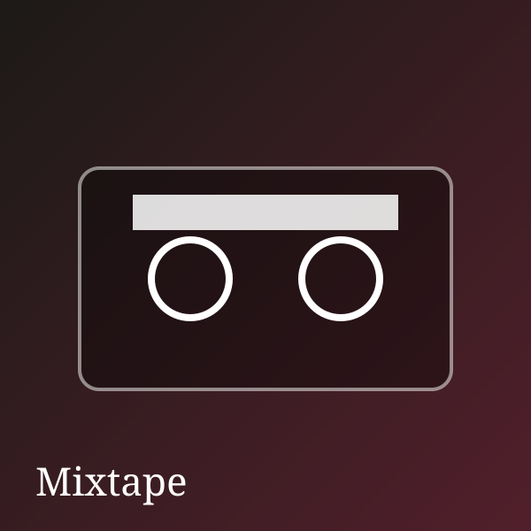

Kept by Accident

Tapes nobody meant to keep: found in markets, cellars, shop bins and single copies.
Most music disappears. These recordings didn't, mostly by luck.
There's a Ghanaian rap tape pressed in about fifty copies and found years later in a market. A Gnawa master shares a cassette with a drummer nobody can name. Forty grimy tapes come out from behind a butcher's counter in Queens, and nine reporter's cassettes from a Cape Town cellar. From Vilnius come home tapes that existed in a single copy, and from Lithuania a whispering tape almost nobody heard. A Japanese label released exactly 222 cassettes of strangeness. And one stranger paid to turn her poem into a record.
If one of these is yours, tell us.